1-18-8 無線網路效能-行動網路
截至 2013 年初，估計全球有 64億 個行動連線裝置。根據 IDC 市場資訊報告顯示，單就 2012 年來看，智慧型連線裝置估計大約有 11億 個出貨量一這當中包括，智慧型手機，平板電腦，筆記型電腦，和個人電腦等等。然而，更值得注意的是，未來幾年還有逐漸成長攀升的跡象：同份 IDC 報告也預測，到 2016年止，新裝置的出貨量會攀升至 18億以上，而其他預測部分，則是到2020年 時，累計總共會有超過 200億 以上的連線裝置。
據估計，在 2012 年時，人類人口數量會到達 70億，而到 2020年時，則會到達 75億人口，而這些趨勢說明了我們對智慧型連線裝置似乎有著無底洞般的胃口：顯然，我們大多數人都不會滿足於只有一個連線裝置的情況。
補充最近數據
截至 2024 年，全球物聯網（IoT）連接設備數量持續增長，預計已超過 250 億台。 其中，中國的物聯網連接數量在 2024 年有望突破 30 億，顯示出該國在物聯網基礎設施建設和應用方面的領先地位。
物聯網設備的增長主要來自企業物聯網的貢獻。預計到 2024 年，企業物聯網連接數量將達到 110 億，而消費者物聯網連接數量則約為 15 億。
此外，物聯網市場的經濟影響也日益顯著。2024 年，全球物聯網設備市場估計達到 980.6 億美元，並預計在未來五年內以 23.25% 的年複合成長率增長，至 2029 年達到 3,366.4 億美元。
整體而言，物聯網設備的數量和市場規模在 2024 年持續擴大，並預計在未來數年內保持強勁的增長勢頭。
截至 2025 年，全球智慧型連線裝置的數量持續呈現爆炸性增長，物聯網（IoT）設備的普及更是顯著。根據 IoT Analytics 的報告，2020 年全球連網裝置數量達到 217 億台，其中 IoT 裝置佔 117 億台，佔比 54%。預計到 2025 年，IoT 連網裝置將超過 309 億台，平均每人擁有約 4 台 IoT 裝置。
智慧家庭領域也在快速發展。預計到 2025 年，超過 50% 的智慧家庭將配備增強的語音控制、AI 家庭管理系統和物聯網擴展等功能。 此外，智慧型穿戴裝置市場也在蓬勃發展，預計 2025 年市場規模將達到 966 億美元。
然而，連線裝置的絕對數量也只是整體使用情境的一小部分而已。在這個成長數據的背後，隱含的是對高速連線、無所不在的無線寬頻存取，以及驅動這些所有新裝置的連線服務等需求，將永遠都無法被滿足的渴望！這就是為何我們必須把我們的對話，轉為以 GSM、CDMA、HSPA，和 LTE 之類的各種手機技術來進行的原因。機會在於，你的大多數使用者都將使用這裡頭的其中一種技術，甚至是唯一的某項技術，來存取你的網站或服務。這當中的賭注很高，而我們必須做對決策才行，因為行動網路無疑地會在效能上帶來各式各樣的挑戰情況。
G時代簡史
要把各種手機標準、釋出版本，以及每種技術的優缺點全都一一詳述的話，看來不止要花掉好幾章的篇幅，搞不好還得要寫上一本專書才有可能。本節的目標很簡單：我們必須對市場上，重要的幾種無線技術的過去和未來的主要里程碑（請參考表-1），發展出對它們的運作參數與含意的洞察力。
表1- 行動網路的各種世代
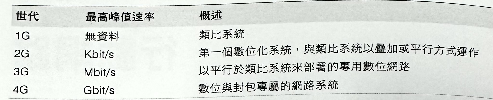第一個重要領悟，是每個無線世代所採用的標準，都是依照「峰值頻譜效率」（peak spectral efficiency）的方式來描述，而這部分到 4G 網路的時候，「峰值資料速率」（peak data rate），已經改用以 Gbit/s+ 那種令人嘆為觀止的數值來標示了。然而，你現在應該有認出，在上一句話裡頭的關鍵字一就是峰值（peak）！在先前一節裡頭所討論過的內容一「峰值資料速率是在理想狀況下達成的」
無論標準為何，每個網路的實際效能都會因為網路的提供者、他們的配置方式、特定設備裡的有效使用者數量、特定位置裡的無線電環境、所使用的裝置，以及所有會影響無線效能的其他因素的關係，而有所不同。因此，雖然在真實世界環境裡的資料速率沒有任何保證，但你可以採用一種簡單卻有效的策略，來校準你的效能期望值（請參考表-2）一 那就是針對每個世代，都假設資料吞吐量相當接近下限，而封包延遲是接近較高上限的情況。
表2- 活躍行動連線的資料傳輸速率和延遲時間
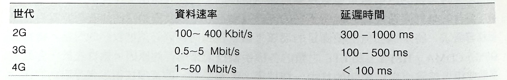為了讓狀況變得更複雜，任何像 3G 或 4G 這種特定網路的分類方式，絕對是過於粗略的，而且同樣的情況也表現在所預期的吞吐量和延遲的對應關係上。若要瞭解為何會目前是這種情況，以及產業的目前走向，我們就得先很快地來審視一下不同技術的歷史，以及隱藏在它們發展過程背後的關鍵角色。
2G 網路的第一代資料服務
在 1979 年時，目本啟用了世界上第一個商業性 1G 網路。那時只是一套類比系統，而且沒有提供任何的資料傳輸功能。到了 1991 年的時候，芬蘭啟用了第一個 2G網路，並採用了 GSM 標準（Global System for Mobile Communications，即「全球行動通訊系統」，而最初是源自於「Groupe Special Mobile」，也就是「群組專用移動系統」），因而引進了以無線電網路來進行數位信號處理（digital signaling）的技術。這次啟用了第一個像文字訊息（SMS）之類的電路交換式行動資料服務，並且以 9.6 Kbit/s 的峰值資料速率，來進行封包的傳遞作業！
直到 1990 年代中期，當 GPRS（general packet radio service，通用封包無線服務）被首次引進到 GSM 標準裡頭時，無線上網的想法就變成了可能一透過 GPRS，你現在可以達到 172 Kbit/s，而往返傳輸時間則通常會在幾百毫秒上下。GPRS 和早期 2G 聲音技術的結合成果，被稱之為 2.5G。幾年後，這些網路藉由 EDGE （Enhanced Data rates for GSM Evolution, GSM 演進技術的增強型資料速率）技術的強化，而使得峰值資料速率增加到 384 Kbit/s。2003 年的時候，美國推出第一個 EDGE 網路（2.75G）。
在此，請容我先暫停，並稍微反思一下 一 無線通訊已有數十年歷史，但透過行動網路來提供實用性與消費者導向資料服務的部分，卻只是近年來才剛開始成形的趨勢！2.75G 網路的出現也只有十年之久，而且在世界上仍然被廣泛地使用著。然而，我們大多數人現在幾乎都無法想像，沒有高速無線網路的生活了。無線技術的接受和演進的速度，真的快得讓人感到驚呼連連了。
3GPP 和 3GPP2 的合作關係
一旦無線資料服務的需求開始增長，無線電網路互用性的問題，就變成是與每個人息息相關的熱門議題。其一，電信業者必須針對無線存取網路（radio access network, RAN）購買和部署相關硬體設備，而這需要大量的投資和後續的維護成本一標準化的硬體設備可以降低成本。其二，若無全面性的產業標準，使用者將被侷限在他們自己的家庭網路裡，因而限制了行動資料存取的使用情況和便利性
為了回應這個問題，歐洲電信標準協會（European Telecommunication Standards Institute, ETSI）在 1990 年代初，發展出很快就被許多歐洲國家，以及世界各國所採用的 GSM 標準。事實上，GSM 將繼續成為最廣泛應用的無線標準一據某些估計，這項標準涵蓋了 80% ～85% 市場佔有率（請參考圖-1）。不過，這並不是唯一標準。同時出現的，是由美國無線電通訊技術研發公司 Qualcomm 所開發的 IS-95 標準，則佔據了市場的 10%～15%，而其中最引人注目的是，許多這類網路都被部署在北美地區。結果，專為 IS-95 無線網路所設計的裝置，卻無法在 GSM 網路上運作，反之亦然一這是許多在國際間旅行的人，所熟悉卻難以接受的糟糕特性。
圖1 ：行動標準在 2003-2007 年間的市場佔有率狀況（節錄自維基百科）
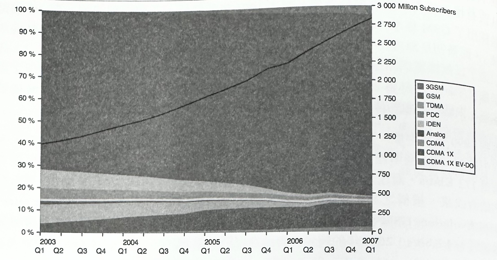在 1998 年時，由於意識到部署標準的全球性發展需求，同時也為了定義下一代（3G）網路的相關需要，GSM 和 IS-95 標準組織裡的參與者共同成立了兩個全球合作專案：
-
第三代合作夥伴計劃（3GPP, 3rd Generation Partnership Project）
負責開發「通用行動通信系統」（Universal Mobile Telecommunication System，UMTS），以作為 GSM 的 3G 升級版本。後來，它也承擔了 GSM 標準的維護以及新的 LTE 標準的發展工作。
-
第三代合作夥伴計劃 2（3GPP2, 3rd Generation Partnership Project 2）
負責開發基於 CDMA 2000 技術的 3G 規格，以作為 Qualcomm 所開發的 IS-95 標準的繼承者。
因此，這兩種類型的標準（請參考表-3）與相關網路基礎設的發展工作，就同步進行著。或許沒有一下子就跳出舊有的框架，但後續仍然有依循著底層技術來做出類似的演進。
表3 ：3GPP 和 3GPP2 所發展的手機（蜂巢式）網路
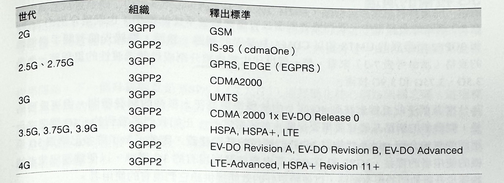在上述名單裡，你應該會看到一些熟悉的名稱一像是 EV-DO、HSPA、LTE 等等。許多網路經紀人已經投入大量的市場資源，並持續投資下去，以促使這些技術成為他們的「最新且最快的行動資料網路」。然而，我們對這個歷史迂迴過程的興趣和理由，並不是就市場需求的角度來看，而是為了綜觀行動無線產業的整個演進脈絡：
- 世界上有兩個支配，並且被加以部署的行動網路類型。
- 3GPP 和 3GPP2 主導每個技術的進展情況。
- 3GPP 和 3GPP2 標準無法讓裝置互用。
目前已沒有所謂的 4G 或 3G 技術了。國際電信聯盟 （International Telecommunication Union, ITU）針對每個無線世代，設立了資料速率和延遲之類的國際標準和效能特性，而 3GPP 和 3GPP2 組織也隨之定義了標準，以契合並超越了在各自技術背景當中的期望。
你要如何知道自己手機所使用的是哪種網路類型呢？很簡單。你的手機有張 SIM 卡吧？假如有的話，就會是從 GSM 演變的某種 3GPP 技術。若要找出網路的相關細節資訊，可以查看一下您的電信業者的常見問答資訊，或者要是你的手機允許的話，也可以直接在你的手機上查看這類網路資訊。
至於 Android 使用者，可以打開手機的撥號畫面，並輸入「*#*#4636#*#*」。
假如你的手機支援的話，它應該會打開一個對話畫面，而你就可以去檢查手機的連線狀態和類型、電池診斷資訊等等。
3G 技術的演進
在 3G 網路的發展當中，我們擁有兩個具有優勢與競爭性的標準，也就是分別由 3Gpp 和 3GPP2 所發展的 UMTS 和以 CDMA 為基礎的網路。然而；根據先前有關手機標理的表格（請參考表-3）來看。每一個世代也都會被分割成幾個過渡性的里裡碑，像是 3.G、3.75G 札 13.9G 技術。
為什麼我們不能直接就跳到 4G 呢？由於標準需要花上很長的開發時聞，但更重要的是，開發新的網路基礎建設需要很龐大的經費才行。正如我們將看到的，4G 需要完至不同的無線介面，以及能夠與 3G 並行運作的基礎建設。因此，為了許多已購買 3G 手機的使用者的權益，3GPP 和 3GPP2 都會繼續發展現有的 3G 標準，以便讓通訊業者會夠逐步升級他們的現有網路，以便將更好的效能提供給它們現有的使用者。
無疑地，各種 3G 網路的吞吐量、延遲，和其他效能特色在每次新釋出的版本上，都能獲得改善，甚至有時候會獲得大幅提昇。事實上，就技術層面而論，LTE 可以看成是 3.9G 的過渡標準！然而，在我們進入 LTE 之前，就先來仔細看看各種 3GPP 和 3GPP 的里程碑。
3GPP 技術的演進
表-4： 3GPP 版本發行史
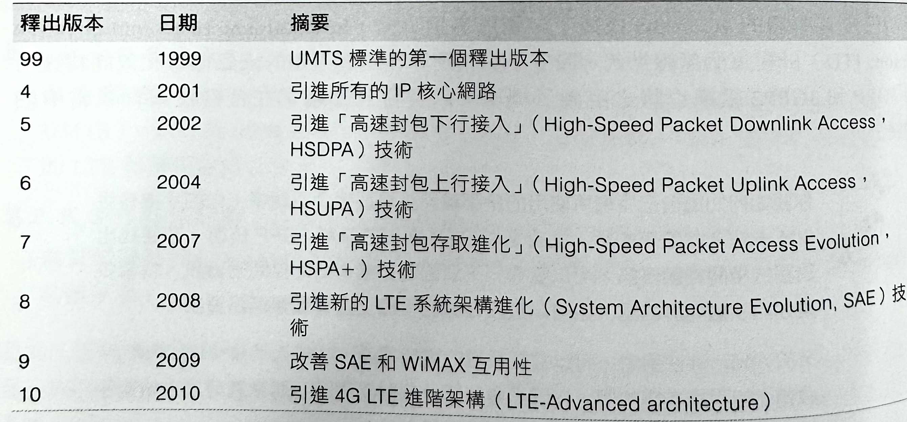在遵循 3GPP 標準的網路當中，HSDPA 和 HSUPA 釋出版本通常是以較為人所知，並且以「高速封包存取」（High-Speed Packet Access，HSPA）網路為名來進行推展的。這兩個釋出版本的組合，使得在實際的部署設備當中，能夠使用到個位數 Mbit/s 等級的傳輸吞吐量，而這樣的結果已經是從早期 3G 速度以來的一大提升了。HSPA 網路通常是被標示為 3.5G。
從那開始，下一個升級版就是 HSPA +（3.75G），而拜簡化核心網路架構之賜，這項標準可在實際的部署設備裡頭，提供更低的延遲時間，而資料速率可達中到高的個位數 Mbit/s 等級的傳輸吞吐量。然而，就如同我們所看到的，引入 HSPA+ 的釋出版本 7，並不是這項技術的極限。事實上，HSPA+ 已經被持續精鍊，並且可以與 LTE 和 LTE 進階架構並駕齊驅了！
3GPP2 技術的演進
表-5：CDMA2000 1x EV-DO 標準的 3GPP2 版本發展史
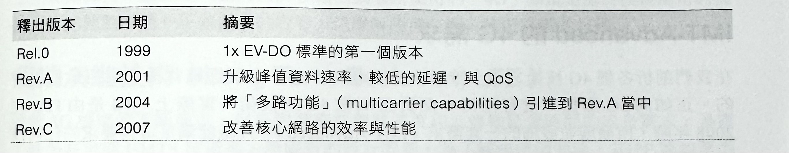由 3GPP2 制定的 CDMA2000 EV-DO 標準依循了類似的網路升級路線。第一版（Rel.0）就啟用低單位數 Mbit/s 等級的下行（downlink）吞吐量，但上行（uplink）速度卻非常慢。上行效能是由 Rev.A 來解決，而在 Rev.B 的時候，則同時對上行和下行速度版做進一步的改良。因此，Rev.B 網路能夠把中到高單位數 Mbit/s 等級的效能，傳遞給它的使用者，因此它能夠和 HSPA （3.5G）以及早期 HSPA+（3.75G）的網路相抗衡。
Rev.C 釋出版本也經常會被稱為 EV-DO Advanced，並在容量和效能上，提供明顯的改善成果。然而，EV-DO Advanced 的接受度並不如 HSPA+ 那樣高。原因何在？假如你更進一步去檢視標準世代表格的話（請參考表-3），你可能已經注意到，3GPP2 沒有一個正式，且具競爭力的 4G 標準。
雖然 3GPP2 可以持續發展它的 CDMA 技術，但是在某些時候，通訊業者和網路供應商廠商都贊成把 3GPP LTE 當作是所有網路類型的共同 4G 繼承者。基於這個理由，許多 CDMA 網路業者也都先把某些資源投資到早期的 LTE 基礎設施上，以便能夠與正在發展中的 HSPA+ 改良情況相互抗衡。
換句話說，世界上大多數行動網路業者都聚焦要把 HSPA+ 和上 LTE 當成是未來的行動無線標準一這是件好事！說到這，請先別緊張。現有的 2G 和3~3.75G 技術仍然在驅動著絕大多數的無線電行動網路，甚至更重要地，它們還會再持續運作至少十年以上。
3G 通常會被稱做是「行動寬頻」（mobile broadband）。然而，「寬頻」是一種相對性的用語。有些地方會把它當作是至少有 256 Kbit/s 的通訊寬頻，而其他地方則要超過 640 Kbit/s 才算，但事實上，這個值會以我們試圖要達到的經驗為基礎而變動著。由於服務會演進，並且需要更高的吞吐量，因此就有了寬頻的定義。
有鑑於此，或許把 3G 標準當做是那些要鎖定並超越的 Mbit/s 寬頻門檻的想法，會更有幫助。距離要跨越的 Mbit/s 障礙還有多遠？是的，那得看標準的釋出版本（如同我們先前看過的）、網路營運業者的配置情況，以及所使用裝置的能力而定。
IMT-Advanced 的 4G 需求
在我們剖析各種 4G 技術之前，瞭解一下隱藏在「4G」名稱標籤背後的東西是很重要的。正如同 3G 那樣，沒有任何一個真正叫做 4G 的技術。實際上，4G 是由 ITU在 2008年 時，所發展並發佈的一套需求（IMT-Advanced）。凡是能滿足這些要求的任何技術，都可以被冠上「4G」的名號。
IMT-Advanced 的一些需求範例，列舉如下：
- 根據 IP 封包來切換網路。
- 能與先前的無線標準（3G和2G）進行互換。
- 針對行動客戶端提供 100 Mbit/s 的資料傳輸速率，而且在客戶端不做位置移動的狀態下，提供 Gbit/s以上的傳輸速率。
- 低於 100ms 的「控制面延遲」（control-plane latency），以及低於10 ms 的「用戶面延遲」（user-plane latency）。
- 在使用者之間的網路資源進行動態配置和共享處理。
- 使用變動頻寬分配機制，來運用 5 到 20MHz 之間的頻寬。
實際的清單是非常冗長的，但以上部分已經抓出我們所要討論的重點：與前幾代相比較之下，有更高的吞吐量與更低的延運時間。有了這些標準之後，我們現在就知道如何去對 4G 網路進行歸類了，對吧？當然沒有這麼快，事情可沒那麼簡單！行銷部門也有話要說！
LTE-Advanced 是特別被開發用來滿足所有 IMT-Advanced 規格的一種標準。事實上，第一個 3GPP 標準也是這樣做的。然而，要是你仔細去看的話，就會察覺到，LTE（第8版）和 LTE-Advanced（第10版）其實是不一樣的標準。就技術層面來說，LTE 應該真正被看成是一個 3.9G 的過渡性標準，儘管它打下了許多必要的基礎來契合 4G 的需求。
那看來幾乎都已經齊備了，但卻還不夠完美！
然而，這就是行銷市場突圍的重點了。在 3G 和 4G 商標都是由 ITU 所握有的情況下，它們的使用情況理應符合每一個世代所定義的需求才對。只是，產業贏得市場主導權，並重新定義了 4G 商標，而引入一整套相當接近 4G 需求的技術。因此，無法符合真正技術上的 4G 需求的 LTE（第8版）和大部分的 HISPA+ 網路，仍然是打著「4G」的名號來對市場進行行銷。
那麼，真正的（LTE-Advanced）4G 部署方式為何？其實那些技術都已經出現了，但接下來就要看，這些網路要如何進行市場行銷，以便從它們那些前輩的光芒之下異軍突起了。無論如何，重點是：目前被許多電信業者所使用的「4G」標籤是處於模稜兩可的情況，而你應該閱讀一下包裝上的內容，以瞭解隱藏在它背後所採用的技術。
長期演進技術（Long Term Evolution, LTE）
儘管 3G 標準的不斷演進，但是對高資料傳輸速度和低傳輸延遲時間的成長需求，暴露了許多在早期 UMTS 技術裡，所固有的設計限制。為了解決這個問題，3GPP 開始著手重新設計核心和無線通訊網路，因而創造出恰如其名的「長期演進技術」（Long Term Evolution）標準（簡稱 LTE）的產物：
- 全面性的 IP 核心網路。
- 簡化網路架構，以降低成本。
- 低傳輸延遲時間，包括用戶面（<10ms）和控制面（<100ms）。
- 新的無線介面和高吞吐量的調變技術（100 Mbps）。
- 能夠使用更大的頻寬配置和載波聚合機制（carrier aggregation）。
- MIMO 是所有裝置的一項基本需求。
無疑地，上述列表讀起來應該很類似之前看過的 IMT-Advanced 需求。LTE（第8版）為新的網路架構奠定了基礎，而 LTE-Advanced（第10版）則帶入了必要的改進，以滿足 IMT-Advanced 所設定的真正的 4G 需求。
目前需要特別注意的是：由於無線網路和核心網路的實作方式不同。因此 LTE 網路無法簡單地以現有 3G 基礎建設去進行升級。取而代之的方式是，LTE 網路必須以並行方式來進行部署，並且要與現有 3G 基礎建設使用不同的頻道。然而：因為 LTE 是屬於 UMTS 和 CDMA 這兩雜標準的共同繼任者，因此它得提供某種方法來與那兩種標準進行互換：一個 LTE 用戶可以無縫地直接切換到 3G 網路，也可以在處於有 LTE 基礎建設的情況下，再切換回來。
最後，就如其名所示，LTE 肯定是所有未來行動網路的長期演進計劃。唯一的問題是，這個未來有多遠？有些業界已經開始投資在 LTE 基礎建設上，而其他業者則開始尋找新的頻道、資金，或者是兩者都有。然而，目前業界預測顯示，這種遷移現象將確實是個長期性的 一 也許是未來的十年左右。在這期間，HSPA+ 則是被安排為舞台上的目光焦點。
每個 LTE 功能裝置都必須針對強制性 MIMO 支援的部分，擁有多個無線頻道。然而，每個裝置也都需要與早期的 3G 和 2G 網路採用獨立的無線電介面。假如你去算一下的話，在每個手機裡頭都會轉換三、四種無線電頻道！針對 LTE 的高資料傳輸速率的部分，你將需要用到4倍的 MIMO，而讓總數達到五、六個無線電頻道。這樣你應該就知道，為什麼你的電池消耗會這麽快了吧？
HSPA+ 正在主導全球的 4G 產業
HSPA+ 早在 2007 年就首度被引入到 3GPP 第7版當中。然而，當大家的注意力很快就被轉移到 2008 年首度引入到 3GPP 第8版的 LTE 的時候，往往也沒注意到，HSPA+ 的發展並沒有因此停下腳步，而且還同步地持續演進著。事實上，HSPA+ 的第10版符合許多 IMT-Advanced 的標準規範。但是，你可能想問：既然我們都已經有 LTE，而每個人也都認為，LTE 就是未來的行動網路標準，那又為何要繼續發展，並投資 HSPA+ 呢？其實答案很簡單，就是在「成本」。
3GP 的 3G 技術控制了世界各地的絕大部分的無線通訊市場，而使得全球各地的電信業者轉而投資龐大的現有基礎建設上。轉移到 LTE 需要進行新的無線網路發展工作，而那等於是要再有另一筆可觀的支出。反觀，HSPA+ 提供了一個具資金效率的路徑：電信業者可以把漸增的升級效果，部署到它們的現有網路上，並獲得相當的成效。
「成本效益」（cost-effectiveness）是這個策略的名稱，同時也是為何目前業界預測（如圖 -2）顯示出，未來幾年，HSPA+ 要為全世界大多數 4G 升級的事負責的原因。在此期間，由 3GPP2 所發展的 CDMA 技術將會持續共存，儘管它們的訂閱數被計畫性地要開始逐漸下降，而新的 LTE 部署將在不同區域以不同的速率同時進行一其中一部份是基於成本考量，而另一部分則是因為不同的規範，以及必要無線電頻寬的可用性狀況。
圖-2 ：美洲地區 4G 發展概況：HSPA+ 和 LTE 行動寬頻成長趨勢預測
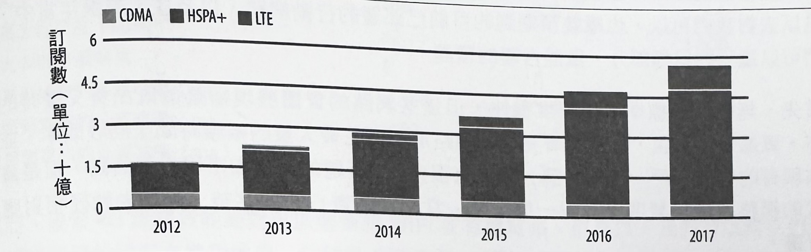基於各種理由，北美似乎在 LTE 的採用上是處於領先地位的一根據目前產業預測顯示，到了2016 年時，在美國和加拿大地區的 LTE 訂戶數量會超越 HSPA（如圖-3）。然而，北美採用 LTE 的速度似乎是明顯比大多數其他國家還要積極。在全球整體環境中，HSPA+ 確定是在當下十年間，位居主導地位的行動無線通訊技術。
圖-3 ：美洲地區（美國/加拿大）4G 發展概況：HSPA+ 和 LTE 成長趨勢預測
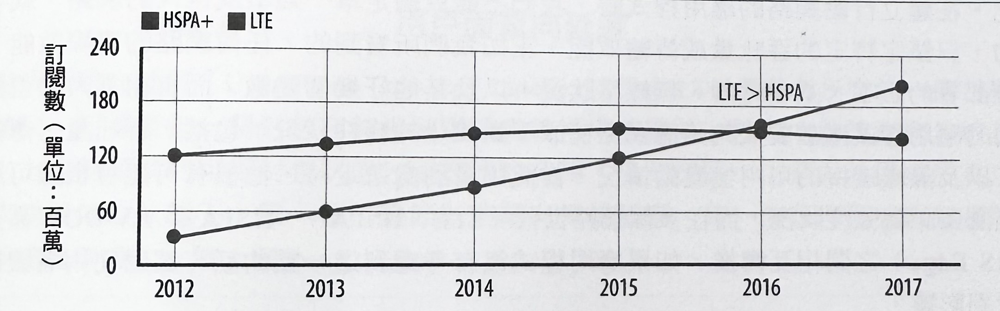儘管許多人剛看到 HSPA＋和 LTE 的採用趨勢時都會感到驚訝，但這其實一點也不令人意外。假如沒其他問題的話，這個裡頭闡明了一個重點：從第一個新的無線標準規格開始，到它成為實際無線網路裡的主流可用技術，大概需要十年左右的時間。
更進一步來看，這其實是個相當安全的賭注，因為我們會談到將在 2020 年初期大放異彩的 LTE-Advanced！然而，新的無線電基礎建設的部署工作，則是一個昂貴又耗時的課題。
多重世代未來的建立工作
隨便預測未來，在我們的產業裡是個危險的做法。然而，在這個時間點，我們已經足以去對我們可以，也應該預期到的目前已部署的行動網路，以及在未來幾年當中，我們可以達到的目標部分，做些合理的預測。
首先，無線通訊標準演進速度很快，但這些網路的實體展現卻是個既昂貴又費時的工作。更進一步來說，一旦部署完成，網路還必須花費大量的維護時間來回收成本，並留住現有的有效客戶。換句話說，雖然有很多 4G 話題的炒作和市場行銷活動：但是舊世代的網路經營將持續營運至少另一個十年。當你在建置行動網站時，最好先做好相對應的計畫。
諷刺的是，雖然 4G 網路對 IP 資料傳輸有明顯地改善，但是 3G 網路仍然是在舊式語音流量的處理工作上的最有效方式！LTE 語音（Voice over LTE, VoLTE）目前正積極發展中，並朝著以 4G 來提供高效且可靠的語音在努力著，但目前大部分的 4G 部署情況，在語音傳送方面，仍然得依賴舊式的電路交換基礎建設。
因此，在建立行動網路的應用程式時，我們不能只鎖定單一類型或世代的網路，或者更糟的，只鎖定特定的吞吐量或傳輸效能。正如我們所看到的，任何網路的實際效能，會根據部署的版本、基礎建設、無線電狀況，以及其他好幾個變數，而有相當大的差異。我們的應用程式應該要能夠適應網路裡頭不斷變化的條件狀況：包括，吞吐量，傳輸延遲，以及無線連接的可用性變動情況。當使用者到處遊走時，他很有可能會根據可用涵蓋範圍與訊號強度狀況，而在多個網路世代（LTE、HSPA+、HSPA+、EV-DO，甚至是 GPRS Edge）之間相互轉換。如果應用程式沒有考慮到這一點的話，那麼使用者體驗將會受到影響。
值得慶幸的是，HSPA+ 和 LTE 採用狀況都正在快速成長著，而讓之前無法實現的高吞吐量和延遲偵測功能的應用程式，都能夠以全新的等級來付諸實行了。吞吐量和延遲都變得更有效率（請參考表-6）：吞吐量在實際環境裡頭已經可達中高單位的 Mbps，而延遲可低於 100 毫秒的狀況，已經讓它們能夠媲美許多家庭和辦公室的 WiFi 網路了。
表-6 ：HSPA+、LTE，和 LTE-Advanced 的比較表
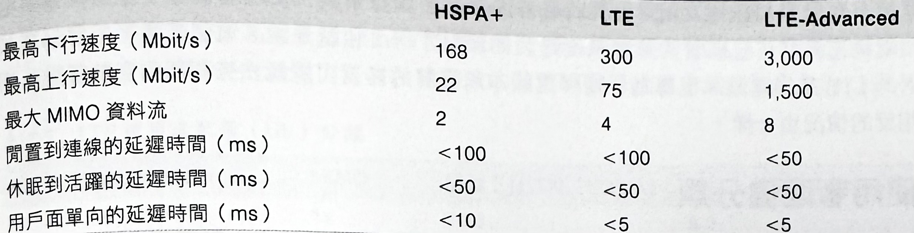然而，儘管 4G 無線效能絕對可以媲美於 WiFi 或有線寬頻，但是以「我們可以將它們視為相同環境的狀況來進行處理」的假設並不合適：因為狀況絕對是不一樣的！
舉例來說，大多數使用者和開發者都期待有個「永久連線」的經驗——裝置被永久地連接到網際網路上，並隨時準備好馬上對使用者的輸入或輸出封包即時做出回應。這個假設在有限範圍下是沒問題的，但對於行動網路就完全是另一回事了！電池壽命和裝置功能之類的實際限制，意味著我們必須以能確切知道行動網路限制的意識來設計我們的應用程式。為了瞭解這些差異，讓我們再稍微深入探討一下。
用戶面單向延遲
用戶面單向延遲（User-Plane One-way Latency）是由 LTE 標準所指定的一個目標時間，而這是指一個封包在無線裝置裡處於可用狀態時，被單向地傳送到無線電台上成為相同的可用封包狀態，所經過的時間。換句話說，這是當設備處於高功率連續接收狀態下，第一個無線節點的單向傳輸延遲。每一個應用程式封包都將承擔這個成本——無一例外。
裝置特性與功能
最常被忽略掉的是，已部署無線網路就只是等式的其中一半。不用說，來自不同製造廠商和發行日期的裝置，都會擁有不同的特性：CPU 速度和核心數量、可用記憶體容量、儲存容量、GPU 以及其他特性。這些部分的每一個都會影響到裝置，以及在那裡頭執行的應用程式的整體效能。
然而，即使這些變數都被考慮到，當涉及到網路傳輸效能時：還有一個部分常常會被忽略掉——也就是無線電（功能 radio capabilities）。具體來說，使用者拿在手上的裝置，必須能夠充分利用已部署的無線基礎建設的優點才行！也就是說，電信業者可能會部署最新的 LTE 基礎建設，但專為早期釋出版本所設計的裝置可能無法去利用到它的優點，而相反的情況也一樣。
使用者配備分類
3GPP 和 3GPP2 標準都會持續演進，並強化無線電界面需求：調變規則、無線電數量，以及其他更多部分。為了取得任何網路的最佳效能，裝置還必須符合每一種網路類型的特定使用者配備（user equipment，UE）分類需求。事實上，針對每個釋出版本，常常會有多個 UE 分類（categories），而其中每一個分類都會提供相當不同的無線電效能（radio performance）。
為何會發生這種顯而易見又重要的問題呢？答案很簡單，同樣又是「成本」問題！裝置的多分類可用性，讓各種裝置能有所區別，並針對價格敏感的使用者提供不同的價格等級，而且有能力去適應現場已部署的網路基礎建設。
光一個 HSPA 標準就規定了 36 個可能的 UE 分類！因此，只說你有一個「HSPA 功能的裝置」（參考表-7）是不夠的——你得去閱讀一下包裝上的說明內容。舉例來說，假設無線電網路有能力取得 42.2 Mbps/s 的吞吐量的話，你也將會需要一個分類 20（2 個 MIMO），或分類 24（dual-cell，雙載波）的裝置。最後，為了進一步混淆狀況，分類 21 的裝置不自動保證吞吐量會超過分類 20 的手機。
表-7 ： 3GPP HSPA 使用者配備（UE）分類範例
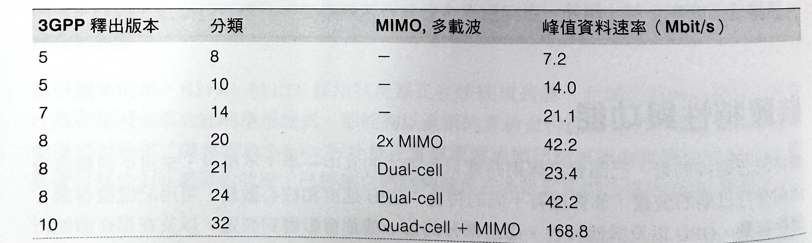同樣的，LTE 標準定義了自己的一套使用者配備分類（請參考表-8）：一個高階智慧型手機很可能是一個分類 3-5 的裝置，但它也可能會搭配許多便宜的分類 1-2 的鄰居，來共用網路。需要 4 個，甚至 8 個 MIMO 的高 UE 分類，很可能會出現在特殊裝置裡頭。一多個無線電會同時消耗大量電力而有供電需求的裝置，很可能根本無法放進你的口袋！
表-8 ：LTE 使用者配備（UE）分類
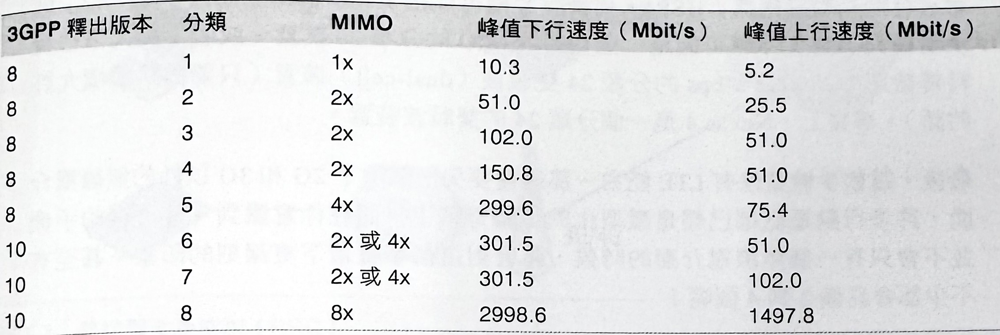實際上，大多數早期 LTE 部署裝置都會鎖定分類 1-3 的裝置，而早期 LTE-Advanced 網路則會專注以分類 3 來當作主要的 UE 類型。
假如你擁有一個 LTE 或 HSPA+ 裝置的話，你知道它的分類等級狀況嗎？一旦你找出它的等級資訊，那麼你可知道你的網路系統是跑在哪一種 3GPP 釋出版本嗎？若要獲得最佳效能，以上兩者必須相符。否則，你將會受到使用中的無線電網路，或裝置的功能所侷限。
解讀在行動裝置上的無線電規格
假如你曾經讀過自己的行動裝置上的技術規格的話，你絕對會注意到，在連線說明部分底下，會有一個頻率和技術類型的冗長且混亂的清單列表。沒錯，現在我們應該能夠來解讀一下這份清單了！為了做個示範，就讓我們來看一下 Google Nexus 4 的規格資訊：
- GSM / EDGE / GPRS (850、900、1800、1900 MHz)
- 3G（850、900、1700、1900、2100 MHz）
- HSPA+ 42
第一行告訴我們，這個裝置可以在 2G 網路上運行，並且具備 GPRS（2.5G）和 EDGE（2.75G）的能力，一峰值資料速率可達數百 Kbit/s。頻率列表顯示出在世界各地的不同法規和網路部署情況下，無線電能夠運作的頻段。
第二行也是類似的內容，不同之處在於它並沒有顯示 3G 的最大吞吐量。不過，在第三行則有明確揭露：HSPA+ 代表該手機可以在 3.75G 網路上運行，而「42」則是讓我們知道，那有可能是一個含有 MIMO 的分類 20 裝置，或者是最大下行資料傳輸速率為 42.2 Mbps 的分類 24 雙載波（dual-cell）裝置（只要網路環境允許的話）。事實上，Nexus 4 是一個分類 24 的雙載波裝置。
最後，這款手機並沒有 LTE 能力，那還需要另一個除了 2G 和 3G 以外的無線電介面。許多行動電話都已經是微型化的工藝奇蹟了，而在你意識到，最時髦的手機並不會只有一個無線電介面的時候，將會對這個事實留下更深刻的印象，甚至有不少都會具備 2 到 4 個呢！
無線電資源控制（Radio Resource Controller, RRC）
3G 和 4G 網路都有一個獨特的功能，就是「沒有所謂的界限範圍」，甚至也不會受到 WiFi 網路的限制。「無線電資源控制」（Radio Resource Controller, RRC）機制會居中負責使用中的裝置和無線電基地台之間的連線管理工作（如圖-4）。瞭解 RRC 存在的原因，以及它如何有效影響行動網路上每個裝置的效能的處理方式，對於高效能行動應用程式的建立工作是相當重要的。RRC 會直接影響使用中裝置的延遲（latency）、吞吐量（throught），以及電池壽命（battery life）。
在使用一個類似 Ethernet 網路線那樣的實體連線時，你的電腦會有一個直接，且永久處於上線狀態的網路連結，而讓這個連線的任何一方都可以隨時發送出資料封包——這是讓延遲時間最小化的最佳狀況。就如同我們在《從乙太網路到無線區域網路》一節當中所看過的那樣，WiFi 標準會遵循類似的模式，而讓每一個裝置都能夠隨時隨地地進行傳輸工作。這也會在最佳狀況下提供最小延遲時間，但由於共用無線電介質的使用方式，也可能在有許多活躍使用者的情況下，帶來高碰撞率與不可預期的效能表現。
更進一步來說，因為任何 WiFi 節點都可以隨時啟動傳輸作業，所以所有的其他人也必須準備好處於接收狀態。這樣無線電就得永遠處於開啟狀態，而這樣就會消耗大量的電力。
圖4 ：無線電資源控制（RRC）
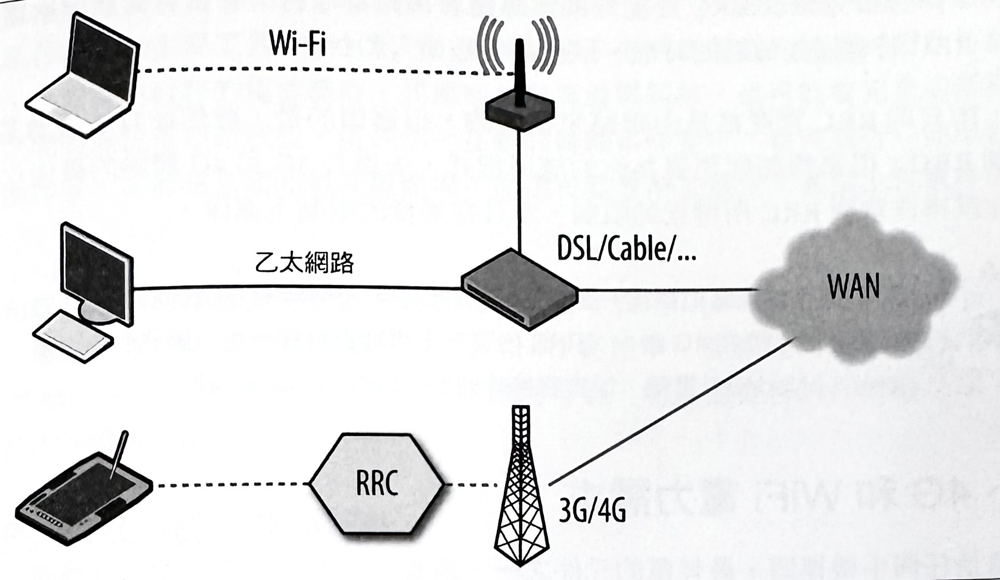
實際上，讓 WiFi 無線電隨時保持有效的方式是稍微有點浪費，因為電池容量在大多數裝置上，都是一種有限資源。因此，WiFi 提供了一個少量電力最佳化機制，而讓存取點運用一個週期性的指摽訊框（beacon frame），來廣播一個「傳輸流量指示訊息」（delivery traffic indication message, DTIM），以表示它之後將會立刻對特定客戶端傳送資料。接著，客戶端就可以偵聽這些 DTIM 訊框，以當作無線電何時應該準備好進行接收的提示訊號。而在其他時候，無線電會處於休眠狀態，直到下一個 DTIM 傳送程序為止。這會降低電池的耗用情況，但卻會增加額外的延時間。
即將到來的 WiFi 多媒體 （WiFi Multimedia, WMM）標準，將會透過 NoAck 和 APSD（Automatic Power Save Delivery，自動化省電傳輸技術）之類的新 PowerSave（省電）機制的協助，來進一步地改善 WiFi 的電源效率。
3G 和 4G 網路所潛藏問題是，一方面是網路效能，另一方面則是電源，或者更確切地說，電力之所以匱乏，是因為行動裝置都會受到它們的電池容量的限制，然而卻還得滿足在有著大量活躍使用者的區域當中，取得高網路效能的關係 —— 這正是 RRC 會存在的原因。
正如其名所示，「無線電資源控制器」（Radio Resource Controller）會承擔所有責任，來負責安排通話時機，並且分配頻寬、每個裝置所使用的訊號功率、電源狀態，以及十幾個其他變數。簡單來說，RRC 是無線電存取網路的中樞神經。想要透過無線頻道來發送資料嗎？你必須先要求 RRC 分配一些無線電資源給你才行。有資料從網際網路發送過來嗎？RRC 將會通知偵聽的時機，以便接收被傳入的封包。
還好，所有的 RRC 管理都是由網路來執行的。但麻煩的是，雖然你無法透過某個 API 來控制 RRC，但是假如你想要為你的應用程式，去進行3G 和 4G 網路的最佳化處理的話，你就得注意到 RRC 所帶來的限制，並且在那樣的限制下運作。
RRC 存在於無線網路裡。在 2G 和 3G 網路中，RRC 存在於核心電信商的網路裡頭，而在 4G 當中，RRC 的邏輯已經被直接移到提供服務的無線基地台（eNodeB）裡頭，以提高傳輸效能並降低協調延遲時間。
3G、4G 和 WiFi 電力需求
無線電是任何手機裡頭，最耗電的元件之一。事實上，螢幕只有在顯示狀態時，才會消耗較高的電力一記得是在「顯示狀態」下的時候。實際上，螢幕在大多數的時間裡，都是處於關閉狀態，而無線電則必須維持著，讓使用者可隨時隨地進行網路存取的那種「永遠連線」的錯覺感。
要達成這種結果的一種方式，就是讓無線電隨時都保持在有效狀態（active），但即使電池容量有最新的進展，這樣運作下來，大概也是幾個小時內就會把電池耗盡。更糟糕的是，3G 和 4G 標準中最新的迭代機制（iterations），需要用到平行傳輸功能（MIMO、多重區域等），而這等同於同時在驅動多個無線電訊號。實際上，必須在啟動無線電來提供低延運的互動流量，與循環進入低電力狀態來啟動適當的電池效能之間，找到適當的平衡點。
不同技術要如何比較？而哪種對電池壽命的改善會比較有用呢？這沒有一個絕對的答案。在搭配 WiFi 的情況下，每個裝置都會設定自己的傳輸功率，而這個值通常是在 30 到 200毫瓦（mW）範圍內。相較之下，3G/4G 無線電的傳輸功率，會受到網路的狀態左右，而在閒置的狀態（idle）下，則會低到 15毫瓦。然而，若考慮到更大的範圍和干援狀況的話，同樣的無線電可能會因為要以高功率狀態來進行傳輪，而導致需要消耗1,000 到 3,500毫瓦才行！
實際上，在傳輸大量資料時，WiFi 在訊號強度還不錯的情況下，通常都會有更好的效率。但是，假如裝置經常都是處在閒置狀態下的話，那 3G/4G 的無線電才會有較好的有效率。為了要有最佳傳輸效能，我們將會想要在不同連線類型之間，進行動態切換。 最好能夠動態切換兩者不同類型的連接，然而，至少就目前而言，還沒有出現這樣的機制。這部份不管在產業界和學術界之間，都是一個活躍的研究領域。
那麼，電池和電源管理會如何影響網路效能呢？訊號強度是用來達成高吞吐量的主要工具之一。然而，高傳輸功率會消耗可觀的能量，因此可能會受到調節，以便實現較好的電池壽命。同樣地，把無線電關掉，也可能會完全切斷與無線基地台之間的無線電連結狀況。這表示，在新的傳輸事件當中，會先進行一連串控制訊息的交換作業，才能建立起無線連線環境，而這可能會增加數十，甚至上百毫秒的延遲時間。
吞吐量和延遲效能都是直接受到使用裝置的電源管理設定（power management profile）所影響。事實上，這是其中的關鍵——在 3G 和 4G 網路中，無線電的電源管理作業是由 RRC 所控制的。RRC 不僅會告訴你進行通訊的時機，而且還會告訴你傳輸功率，以及循環切換不同電源狀態的時機。
LTE 的 RRC 狀態機機制
每個 LTE 裝置的無線電狀態，都是由目前對使用者提供服務的無線基地台所控制。事實上，3GPP 標準定義了一個良好的狀態機機制（state machine），而這個機制會描述每個裝置連上網路的可能電源狀態（如圖-5）。網路營運商可以對會觸發狀態轉移的參數進行修改，但是狀態機本身在所有 LTE 部署裝置當中都會是一樣的。
圖-5 ：LTE RRC 狀態機
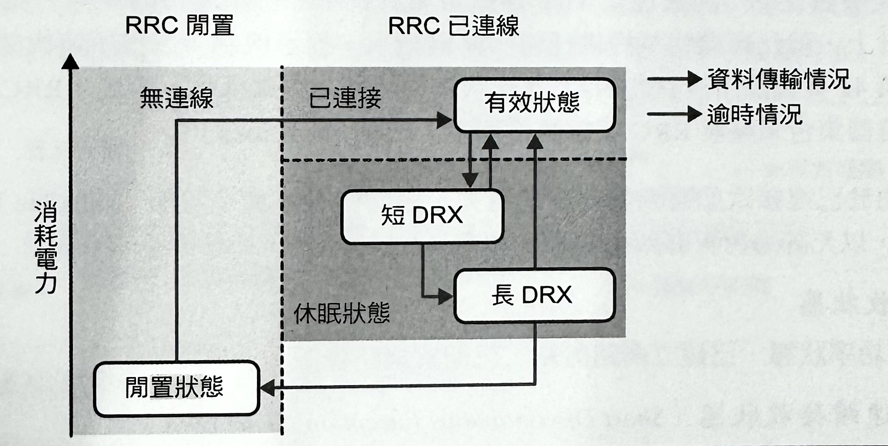
-
RRC 閒置狀態（Idle）
裝置的無線電處於低功率狀態（<15 mW），並且會進行偵聽來控制流量。此時，不會有任何無線電資源被分配給電信網路裡的客戶端。
-
RRC 已連線狀態（Connected）
裝置的無線電處於傳輸資料，或等候資料時的高功率狀態（1000~3500 mW），而無線電網路會為它分配專屬的無線電資源。
裝置若不是處於只會偵聽著向內流量的呼叫通知之類的訊號，來控制頻道廣播狀況的「閒置」狀態，就會是處在網路對客戶端已擁有一個既定環境，並做好資源分配作業的「已連線」狀態。
當處於閒置狀態時，裝置就無法傳送或接收任何資料。若要這樣做的話，它就必須先透過偵聽網路廣播的方式讓它自己與網路進行同步，然後再發出一個請求，以便讓 RRC 將它遷移到「已連線」狀態。這種協商作業可能會花上幾次的往返傳輸才能被建立起來，而 3GPP LTE 規格針對這樣的狀態轉移情況，分配了一個 100 毫秒或更低的目標時間。在 LTE-Advanced 裡頭，目標時間被進一步地降低到 50 毫秒。
一旦處於連線狀態，無線電基地台和 LTE 裝置之間的網路脈絡環境（network context）就會被建立起來，此時資料就可以被進行傳輸處理，然而，一旦有任何一端完成資料傳輸動作，RRC 要如何知道將裝置轉換到低功率狀態的時機呢？這是個棘手的問題，因為它根本就無從得知！
IP 流量是突發性的，而最佳化 TCP 連線是屬於長時間持續連接的類型。此外，UDP 流量在設計上，就已經擺明不提供任何「傳輸結束」提示機制。這樣所造成的結果，就不會類似先前頭所談到的 NAT 連線狀態逾時解決方案那樣。因此，RRC 狀態機就得仰賴計時器集合來觸發 RRC 狀態轉移程序（state transitions）。
最後，由於已連接狀態需要如此高的電力，因此就有多種子狀態（substate）可用，（如圖-5），以允許進行更有效率的處理作業：
-
連續接收狀態：
最高功率狀態，已建立網路脈絡，已配置網路資源。
-
短期不連續接收狀態（Short Discontinuous Reception, Short DRX）：
已建立網路脈絡，不配置網路資源。
-
長期不連續接收狀態（Long Discontinuous Reception, Long DRX）：
已建立網路脈絡，不配置網路資源。
在高功率狀態下，RRC 會為裝置建立一個保留區，以便透過無線介面來接收和傳送資料，並且會通知裝置時槽 （time-slots）安排情況、必須使用的傳輸功率、調變規格，以及其他各種變數。接著，要是裝置在配置時期就已經處於閒置狀態的話，就會被轉換成 Short DRX 電力狀態，此時網路脈絡仍然會被維持住，但是卻不會被分配任何的特定無線電資源。在 Short DRX 狀態下，裝置就只能傾聽來自網路的定期廣播訊號，而讓它有辦法保有電力一類似在 WiFi 裡的 DTIM 間隔那樣。
「分配無線電資源」是指什麼？
在 LTE 中，正如大多數最新的無線標準那樣，有共用的上行（uplink）和下行（downlink）無線電頻道，而其中的存取情況是由 RRC 所控制的。當處於已連線狀態時，RRC 會告訴每個裝置，哪個時槽被分配給誰、要使用什麼傳輸功率、調變方式，以及各種其他變數。
假如行動裝置沒有被 RRC 分配到這類資源的話，那它就不能進行任何資料的傳輸或接收作業。因此，在處於某個 DRX 狀態時，裝置就會與 RRC 進行同步，但是卻不會有任何上行或下行資源被分配給它，此時，裝置是處於「半清醒狀態」。
如果無線電閒置時間夠長，它就會轉成 Long DRX 狀態，這與 Short DRX 狀態一樣，只是裝置在醒來去偵聽廣播訊息之間，會有較長的週期處於休眠狀態（如圖-6）。
圖-6 ：不連續接收程序：Short DRX 與 Long DRX
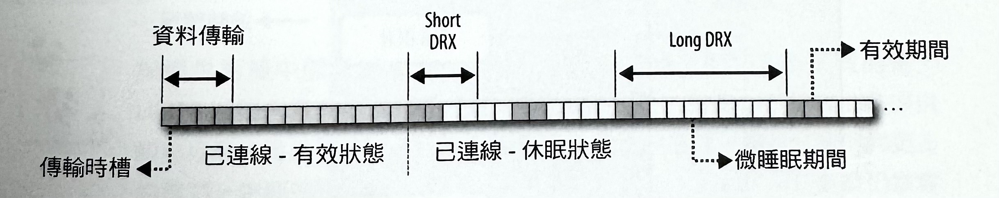假如網路或行動裝置在某個 Short 或 Long DRX 狀態當下，必須傳輸資料的話，會發生什麼狀況呢？裝置和 RRC 之間必須先進行控制訊息的交換作業，以協商出傳輸和偵聽無線電廣播訊號的時機。對 LTE 來說，這個協商時間（從休眠到連線）會被指定要小於 50 毫秒，而在 LTE-Advanced 的情況下，甚至要壓縮到 10 毫秒以內。
那麼，這些在實際情況下，意味著什麼呢？這表示，根據無線電目前所處的功率狀態，LTB 裝置可能會為了要與 RRC 協商出必要資源，而要先花上10到100毫秒的延遲時間（表-9）。接著，應用程式資料才可以經由無線連結，來透過電信商的網路進行傳輸，然後再被傳送到公開的網際網路上。特別是在設計對延遲很敏感的應用程式的時候，若能對這些延遲做好規劃，就可以在「不可預知效能」與最佳化處理過的行動應用程式之間有所區別。
表-9 ：LTE 和 LTE-Advanced 的 RRC 延遲時間
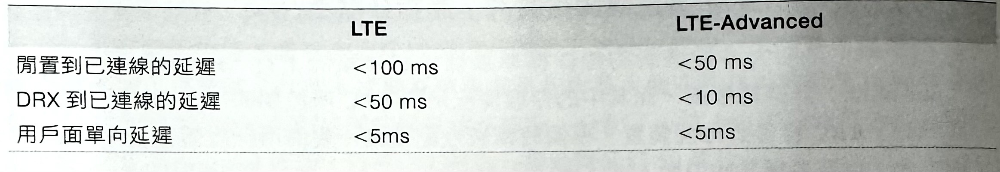HSPA 和 HSPA+（UMTS）的 RRC 狀態機機制
在 LTE 和 LTE-Advanced 之前的早期 3GPP 網路，擁有一種同樣是由無線電網路所維護，並且也非常類似 RRC 的狀態機機制。這聽起來似乎是個好消息。但，遺憾的是，這個早期的狀態機機制稍微有點複雜（如圖-7），而且延遲時間也相當冗長。事實上，LTE 能提供最佳效能的原因之一，就在於 RRC 狀態機機制的簡化架構與改良效能。
圖-7 ：UMTS RRC 狀態機: HSPA 、 HSPA+
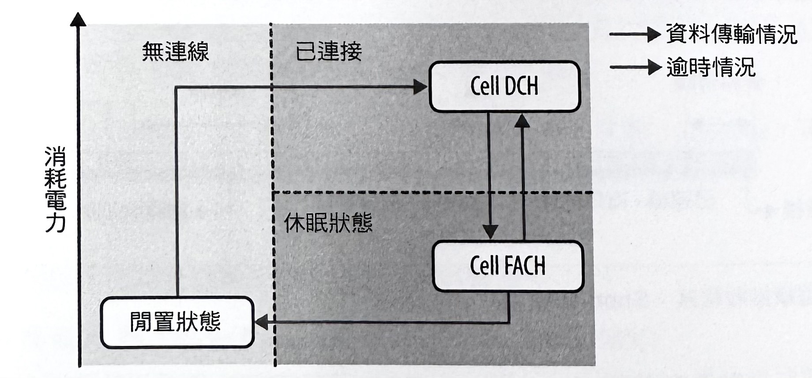-
閒置狀態（idle）
類似於 LTE 裡的閒置狀態。裝置的無線電處於低功率狀態，並且只會進行偵聽以控制來自網絡的流量。此時，不會有任何無線電資源被分配給電信網路裡的客戶端。
-
專用頻道狀態（cell Dedicated Channel, cell. DCH）
類似在處於連續接收狀態下的已連接 LTE 模式。裝置會處於高功率狀態，而網路資源會被同時分配給上行串流（upstream）和下行串流（downstream）的資料傳輸作業。 -
轉送存取頻道狀態（cell Forward Access Channel, cell FACH）
一種屬於中間等級，並且消耗功率遠低於 DCH 的電力狀態。此時，裝置不會擁有專用網路資源，但仍然能夠透過共用的低速頻道（通常是低於 20Kbps 的速度）來傳輸少量的使用者資料。
閒置和 DCH 狀態幾乎就和 LTE 裡的閒置和已連線狀態一樣。不過，中間 FACH 狀態則是 UMTS 網路（HSPA、HSPA+）所特有的狀態，並且允許透過公用頻道來進行小量的資料傳輸作業——緩慢、平穩，而且只消耗約為 DCH 狀態的一半電力。實際上，這種狀態是被設計用來處理非互動流量（non-interactive traffic）—像是許多背景應用程式所會使用的定期輪詢（polling）或狀態檢查程序。
無疑地，從 DCH 到 FACH 狀態的轉換作業是由定時器（timer）來進行觸發的。不過，當處於 FACH 狀態時，會由什麼來觸發以便返回 DCH 狀態呢？每個裝置都擁有一個被發送資料的緩衝區（buffer），而且只要這個緩衝區不超過某個網路設定門檻（通常是 100 到 1,000 個位元組）的話，裝置就可以保持在中間狀態。最後，假如在處於 FACH 狀態一段時間後，已經沒有任何資料需要被進行傳輸的話，另一個計時器就會把裝置轉換到閒置狀態。
與提供兩種中間狀態（Short DRX 和 Long DRX）的 LTE 所不同的是，UMTS 裝置只會有一種中間狀態：FACH。然而，即便 LTE 理論上會提供較高程度的電力控制機制，但是無線電在 LTE 裝置裡，本身就會消耗更多的電力——更高的吞吐量，會增加電池消耗的成本。因此，LTE 裝置仍然會比它們的 3G 前輩們，需要擁有一種更高電力的配置方式。
單就電源狀態不談，也許早期 3G 網路和 LTE 之間的最大差異，是在狀態轉換的延遲部分。LTE 將閒置轉換到已連線狀態的目標，設定在幾百毫秒左右，而從閒置轉換到 DCH 狀態的相同轉換作業，可能會花上兩秒鐘，而且在 3G 裝置和 RRC 之間，還需要用到數十個控制訊息！FACH 轉換到 DCH 狀態的情況也好不了多少——需要用到高達 1.5 秒左右的轉換時間。
幸好，最新的 HSPA+ 網路在這方面已經大幅改進，並且能與 LTE 相抗衡（請參考表-6）。然而，我們不能指望隨時隨地都可存取到 4G 或 HSPA+ 網路，因此舊有的 3G 網路，將還會持續存在至少十年左右內。因此，所有的行動應用程式都應該考慮到，當透過 3G 介面來存取網路時，那數秒鐘的 RRC 傳輸延遲的問題。
EV-DO（CDMA）的 RRC 狀態機機制
雖然像 HSPA、HSPA+，和 LTE 之類的 3GPP 標準，主導了全球的網路標準，但別忘了，還有 3GPP2 的 CDMA 基礎網路。EV-DO 網路的成長曲線或許看起來相對平緩，但即便如此，目前產業計畫顯示在 2017 年時，會有近 5 億的 CDMA 無線訂閱者。
不意外地，無論標準的差異為何，在 UMTS 和 CDMA 的基礎網路上，其根本限制都是一樣的——電池電力是一種有限資源、無線電的運作成本高昂，而網路效能都是重要目標。因此，CDMA 網路也擁有一個用來控制每個裝置的無線電狀態的 RRC 狀態機機制（如圖-8）。
圖-8 ：CDMA 的 RRC 狀態機機制：EV-DO（Rev. 0 到 DO 進階）
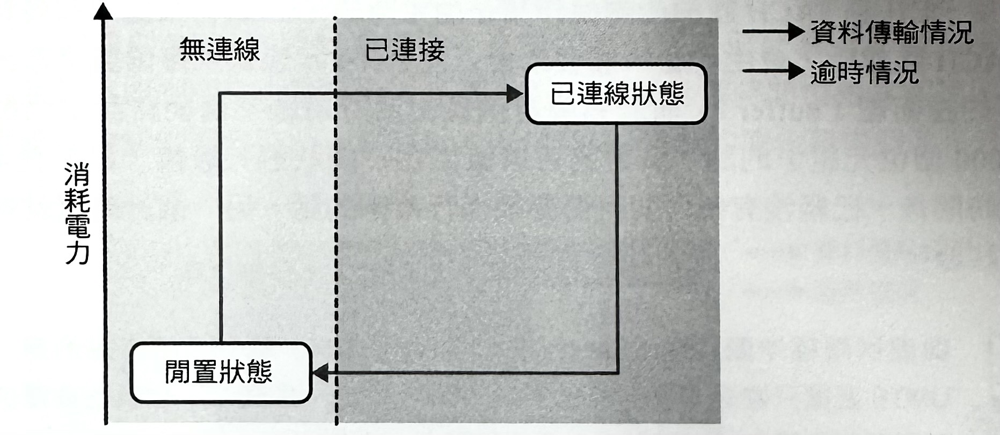-
閒置狀態（Idle）
類似 3GPP 標準的閒置狀態。裝置的無線電處於低功率狀態，並且只會進行偵聽以控制來自網路的流量。此時，不會有任何無線電資源被分配給電信網路裡的客戶端。
-
已連線狀態（Connected）
類似 LTE 的已連線模式和 HSPA 裡的 DCH 狀態。裝置會處於高功率狀態，而網路資源會被同時分配給上行串流（upstream）和下行串流（downstream）的資料傳輸作業。
這絕對是我們曾經探討過的所有狀態機機制裡頭，最簡單的 RRC 狀態機機制——裝置若不是處於被分配網路資源的高功率狀態，就是處於閒置狀態。更進一步來說，所有的網路傳輸作業都需要一次的轉換程序來變成已連接狀態，而延遲時間則類似於 HSPA 網路那樣，會根據已部署基礎建設的版本，而有數百至數千毫秒。這裡頭沒有任何的中間狀態，而返回閒置狀態的轉換作業，則同樣是由電信商設定的逾時情況所控制。
定期轉換的低效率狀況
不論是運用哪個世代或標準來處理，「逾時驅動」（timeout-driven）無線電狀態轉換程序的一個重要結果，就是很容易建構出會同時產生互動流量上的不良使用者體驗，以及不佳的電池效能的網路存取模式。事實上，你所要做的，就是等到無線電轉換成低功率狀態，然後觸發一個網路存取作業來強制進行一次 RRC 的轉換作業！
為了說明這個問題，讓我們先假設，裝置是在某個 HSPA+ 網路當中，並且被設定成在無線電停止運作 10 秒之後，會從 DCH 轉換成 FACH 狀態。接著，我們會載入一個應用程式，而這個程式會安排好類似某種即時分析作業之類那樣，並且每隔 11 秒就會進行一次的一種間歇性傳輸作業。這樣會有什麼結果呢？此時，裝置可能會在資料傳輸作業花掉幾百毫秒後就結束，而其餘時間，則在高功率狀態下處於閒置情況。麻煩的是，它只會轉換至低功率狀態，並且在數百毫秒之後，才會被再一次地喚醒——這是延遲和電池效能表現的最糟糕情況了。
每次的無線電傳輸作業，無論多小，都會迫使轉換到高功率狀態。接著，當傳輸完成時，無線電將保持在高功率狀態，直到停止運作定時器（inactive timer）逾期為止（如圖-9）。實際資料傳輸的大小並不會影響定時器。也就是說，裝置在返回閒置狀態之前，後續可能還必須在好幾次的中間狀態之間循環轉換。
圖-9 ：HSPA+ 的能量尾端當中，轉換作業的功率比較：DCH > FACH > IDLE
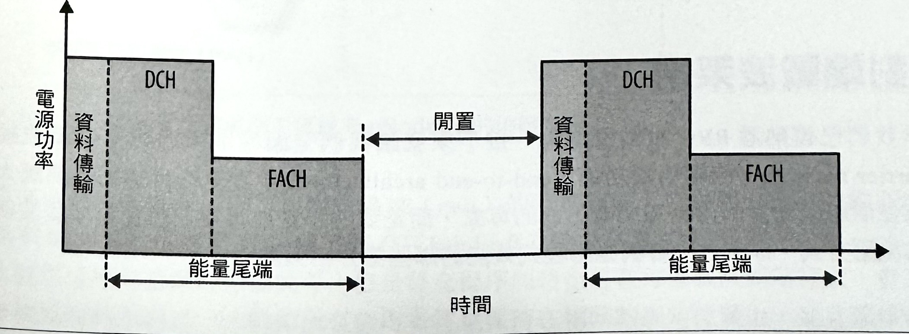由「定時器驅動」（timer-driven）狀態轉換程序所產生的「能量尾端」（energy tail），讓行動網路上的定期轉換作業變成是一種非常低效率的網路存取模式。首先，你必須付出狀態轉換的延遲成本，接著，會發生轉換作業，到最後無線電會處於閒置狀態，並持續耗費電力，直到所有的定時器都引發，使得裝置可以返回到低功率狀態為止。
46% 的電量消耗在 0.2% 的總位元組的傳輸工作上
AT&T 實驗室發表過一篇很重要的研究論文（《Profiling Resource Usage for Mobile Applications》，「剖析行動應用程式的資源使用情況」），而論文內容主要是在分析一些熱門行動應用程式的網路和電池效率。在這些應用程式當中，Pandora（音樂電台程式）是對於間歇性網路傳輸在行動網路上的低效率狀況的一個很重要的研究案例。
每當一個 Pandora 使用者播放一首歌曲時，整個音樂檔案就會由應用程式從網路上一次地串流下載下來——這是正確的處理方式：盡可能吸取更多資料，然後就關閉無線電。然而，隨著音樂的傳輸作業，這個應用程式會藉由每隔 60 秒發送定期的分析封包，以便管理週期性的聽眾測量數據。這樣的淨效率（net effect）如何呢？根據分析指標訊號（beacon）的結果得出，總傳輸位元組的 0.2%，就花了這個應用程式總電源消耗量的 46%！
指標訊號的傳輸量很小，但是由 RRC 狀態轉換程序為了讓無線電長時間保持有效運作狀態，所引發的「能量尾端」（energy tails），則非必要地消耗了 46% 的電力。透過在無線電還處於有效運作狀態時，把分析資料匯聚成較少的請求，或是發送聽眾資料的方式，我們就可以消除掉不必要的能量尾端，並且讓應用程式的電力效率幾乎提高一倍！
端對端載波架構
既然我們已經熟悉 RRC 和裝置能力，接下來就讓我們全面性地來考慮整個載波網路（carrier network）的端對端精構（end-to-end architecture）。這裡的目本標不是要讓大家成為每個組成元素的術語和功能方面的專家，而是要把那些會直接左右資料在載波網路裡的流動方式，以及會影響到應用程式效能的那些部分給強調出來。
載波網路裡的特定基礎建設，和各種邏輯和實體組件的名稱，都是依據已部署網路的世代和類型而定：像是 EV-DO、HSPA、LTE⋯等等。然而，在那當中還有很多非常類似的東西，我們將會來審視一下 LTE 網路的高階架構（high-level architecture）。
為何是 LTE 呢？首先，它是新的載波部署上最合適的架構。其次，並且也相當重要的是，LTE 的關鍵特性之一，就是它的簡化架構——極少的組件和極少的相依性，也會改進運作效能。
無線電存取網路（Radio Access Network, RAN）
「無線電存取網路」（radio access network, RAN）是每個載波網路的最大邏輯組件（如圖-10），而它的主要職責就是調解對供應無線電頻道的存取情況，並對進出使用者裝置的資料封包進行往返運作作業。事實上，這是由 RRC 所負責控制和調解的組件。在 LTE 當中，每個無線電基地台（eNodeB）都會握有 RRC，並為區域裡的每個有效使用者，維護 RRC 狀態機，且執行所有的資源分配工作。
圖-10 ：LTE 無線電存取網路：區域和 eNodeBs 的追蹤情況
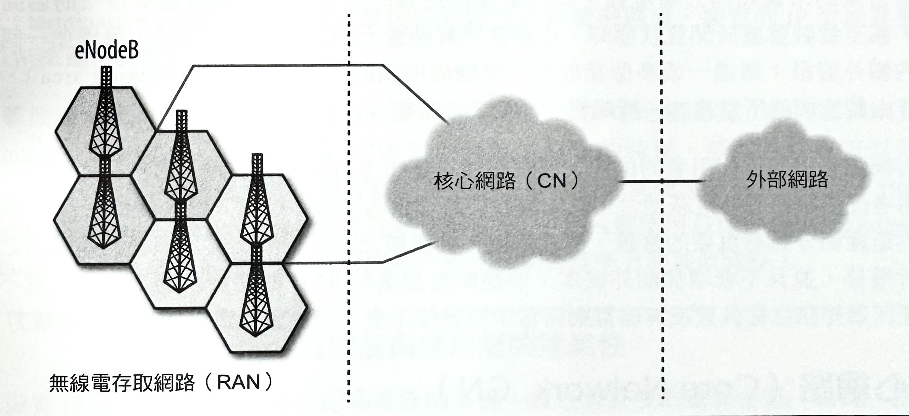
每當某個使用者擁有一個來自附近區域（cell）的強烈訊號，或者假如他目前的區域呈現過載情況的話，他可能就會被移交（hand-off）給一個鄰近的基地台（tower）。然而，雖然這項作業講起來很簡單，但是移交程序同時也是在每個載波網路裡頭，會造成額外複雜度的原因之一。假如所有使用者總是保持在相同的固定位置上，並且都停留在某個訊號基地台裡頭的話，那麼「靜態繞徑拓璞結構」（static routing topology）就夠用了。然而，我們都知道，實際上根本就不是那樣：使用者會移動，因此必須從某個基地台被遷移到另一個基地台，而遷移程序不應該會中斷任何的聲音或資料傳輸作業。顯然，這是個不容小覷的問題。
首先，假如使用者的裝置可能會與任何無線電基地台有所關聯，而我們要如何知道，要把收到的封包繞徑到哪裡呢？當然，這一點也不難：無線電存取網路必須與核心網路進行通訊，以便追蹤每個使用者的位置。接著，為了掌握透明的移交作業（transparent handoff），它也必須能夠在不中斷任何現有的使用者啟用語音和資料議程工作的情況下，動態地更新既定的通道和路徑。
在 LTE 中，基地台對基地台的移交作業可以在數百毫秒以內被執行完成，而這將會在實體上的資料傳輸過程，造成輕微的暫停情況，但除此之外，對於使用者和執行在他的裝置上的應用程式來說，這項程序是完全透明的。在早期的世代網路當中，同樣的過程可能得花上好幾秒鐘的時間。
然而，事情並非就這樣結束了。無線電移交程序可以是一種經常性的事件狀況，尤其是在高密度的市區和辦公環境裡，而且需要使用者的裝置持續地執行區域移交的協商作業，甚至當裝置處於閒置狀態時，也將會消耗裝置上的大量電力。因此，得增加一個間接的額外層級：透過一或多個基地台，來構成所謂的「追蹤區域」（tracking area），而這是由載波網路所定義的一種邏輯上的基地台群組。
核心網路必須知道使用者的位置，但它往往只會知道追蹤區域資訊，而無法知道目前為使用者提供服務的特定基地台一就如同我們將看到的那樣，這對入內（inbound）資料封包的延遲部分具有重要的含義。也就是說，裝置被允許在相同追蹤區域裡的基地台之間進行遷移，並且不會增加額外成本：要是裝置是處於RRC 的閒置狀態下的話，就不會有任何通知訊息從裝置或無線電網路當中被發佈出來，因而讓行動裝置能夠節省電力。
核心網路（Core Network, CN）
「核心網路」（如圖-11）：同時也在 LTE 裡頭，被稱做是「進化封包核心」（Evolved Packet Core, EPC），會負責資料的繞徑（routing）、計算（accounting），和策略管理作業（policy management）。簡單來說，它是用來把無線電網路連結至公共網際網路的部分。
圖-11 ：LTE 的核心網路（EPC）：PGW、PCRF、SGW 和 MME
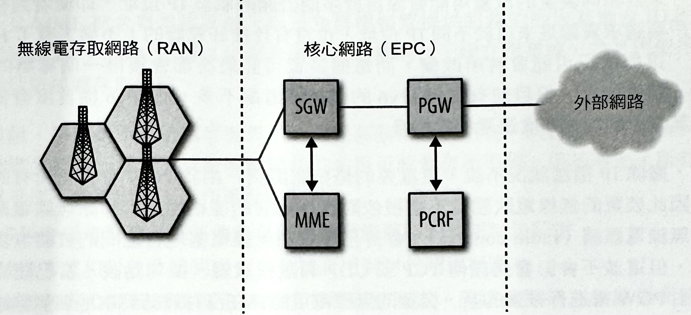
首先，我們會擁有「封包閘道」（packet gateway, PGW），而它就是可以讓行動電話連上公開的網際網路的公用閘道。不管採用哪種協定，PGW 都是所有外部連線的終止點 （termination point）。當有個行動裝置被連接到載波網路時，裝置的 IP 位址就會由 PGW 來進行分配和維護。
在載波網路裡的每個裝置，都會擁有一個與被分配的 IP 位址相互獨立的內部識別資訊（internal identifier）。因此，當 PGW 接收到某個封包的時候，該封包就會被封裝起來，並透過 EPC 來傳送至無線電存取網路。LTE 會針對控制面流量採用 SCTP（Stream Control Transmission Protocol，串流控制傳輸協定），並且會使用 GTP（GPRS Tunneling Protocol, GPRS 通道協定）和 UDP 的組合機制，來處理所有的其他資料。
實體層與應用層的連結性
裝置 IP 位址是由 PGW 所分配和維護的事實，擁有著許多的重要含意。首先，這表示一個無線裝置可以很容易地與多個 IP 關連在一起。從相反的角度來看，假如 IP 位址很珍貴的話，那麼可以讓多個裝置來共用相同的 IP 位址，但是卻針對外送和內傳流量來分配不同的通訊埠——此時，PGW 扮演的就是 NAT 的角色。事實上，後面這個情況是相當常見的。相同的載波 IP 位址可以被指派給它的網路裡的幾十個，乃至上百個裝置。
因此，來自相同裝置的流量可能會源自於多個公開的載波 IP 位址。即使看到相同的客戶端請求資源是來自於不同 IP 位址，也沒有什麼好驚訝的！不過，有了 IPv6 之後，這種情況可能會有所改變，而每個裝置可能最後都會獲得一個專屬的 IP 位址。話雖如此，但目前有支援 IPv6 的電信業者還不多，而 IPv6 從首度發佈開始，其採用的成長速度還是相當緩慢。
然而，撇除 IP 指派狀況不說，更重要的是要認識到，由於 PGW 會終止所有的連線，因此裝置的無線電狀態並不會被依附到應用層的連結性上：卸除無線電網路裡的無線電脈絡（radio context），會終止裝置和無線電基地台之間的實體無線電連結，但這並不會影響到任何 TCP 或 UDP 的議程狀態。換句話說，當已建立連線是由 PGW 來進行維護的話，裝置的無線電可能會在沒有連結到本地端無線電基地台的情況下，處於閒置狀態。
一旦應用程式資料必須被進行傳輸時，實體無線電網路就會被重新建立起來，並且會在無副作用的情況下恢復通訊，而不像 RRC 協商作業那樣，會為了必須建立起無線電脈絡，以致於引發延遲狀況。
PGW 還會執行封包篩選與查驗、QoS 指派、DoS 保護，以及各種常見的政策措施。PCRF （Policy and Charging Rules Function，政策與充電規則功能）組件會負責維護和評估封包閘道的這些規則。PCRF 是一種邏輯組件，這表示它可以成為 PGW 的一部分，或者另外獨立出來。
現在，假設 PGW 已經從公開的網際網路，接收到在它的網路上的某個行動裝置的封包的情況，它要把資料繞徑到哪裡去？PGW 無從得知使用者的實際位置，而且也不知道是否是在無線電存取網路裡的不同追蹤區域裡。因此，接下來就是屬於「服務閘道」（Serving Gateway, SGW）和「機動性管理實體」（Mobility Management Entity，MME）的責任了。
PGW 會把它的所有封包全都轉到 SGW。然而，為了讓事情變得更複雜，SGW 可能不會知道使用者的確切位置。事實上，這項功能是屬於 MME 的主要責任之一。「機動性管理實體」組件是一種可有效地管理網路上的每個使用者的所有狀態的使用者資料庫，包括使用者在網路上的位置、帳號類型、計費狀態、已啟用服務，以及所有的其他使用者元資料（user metadata）。每當網路裡的某個使用者的位置發生變動，位置更新資訊就會被發送給 MME；當使用者打開他們的電話時，MME 就會執行認證作業等等。
因此，當封包到達 SGW 時，就會有個用來查詢使用者位置的請求，被發送至 MME。接著，一旦 MME 把含有追蹤區域，以及為目標裝置提供服務的特定基地台 ID 的結果資訊傳回給 SGW，SGW 就可以和尚未出現過的基地台，建立起連線，並且將使用者資料給繞徑到無線電存取網路。
概括來說，那就是所有的處理過程了。這種高階架構在所有不同世代的行動資料網路當中，實際上都是一樣的。或許邏輯組件的名稱可能會有所不同，但基本上，所有的行動網路幾乎都不會超出底下工作流程的範疇：
- 資料會抵達將核心網路連結至公開的網際網路的外部封包閘道。
- 繞徑方式和封包政策的組合，會被套用到封包閘道裡頭。
- 資料會從公開閘道繞徑至某個或多個服務閘道，而這些閘道為無線電網路裡的裝置，擔任機動性錨點（mobility anchors）的角色。
- 使用者資料庫服務會執行認證程序、計費處理、服務的供應作業，以及網路上的每個使用者的位置追蹤工作。
- 一旦無線電網路內的使用者位置被判斷出來，資料就會從服務閘道被繞徑至適當的無線電基地台。
- 無線基地台會搭配目標裝置來執行必要資源的分配與協商作業，並透過無線電介面來傳輸資料。
LTE 核心網路的簡化和統一架構
LTE 的主要特點之一，就是它那全新的「進化封包核心」（EPC）網路，而這個核心網路以 IP 專用架構為基礎所建立出來的，並且被設計成可透過相同的統一網路來同時運送語音和資料。這項設計在電信商的營運上，更具成本效益，但是卻也對網路效能有更高的需求——語音需要較低的延遲，而 4G 速度需要有很高的吞吐量。
EPC 要如何實現這些目標呢？雖然這當中有許多結構上的改進，但是和前一代的主要差異之一，則是 LTE 核心網路的簡化架構：它移除了某些組件，並將其他幾項合併成更少的邏輯組件，而且有許多要做的決策都已經被轉移到網路的邊緣區域。
舉例來說，在 LTE 裡，RRC 是由無線電基地台（eNodeB）來進行維護的，而在早期的世代當中，RRC 則是由更高層級的網路所負責管理的。然而，那會在網路裡頭的所有控制流量上，造成額外的延遲以及效能瓶頸。
回程容量與延遲
在任何載波網路的效能裡的一個重要因素，就是所有邏輯和實體組件之間的供應連通性（connectivity）和容量（capacity）。LTE 無線電介面在使用者和無線電基地台之間，可能有高達 100Mbps 的容量，但是一旦訊號被無線電基地台所接收到的時候，就必須有可用的充分容量來把所有的這項資料，透過載波網路給轉送到真正的目的地。此外，也別忘了，一座訊號基地台應該要能夠同時對許多的有效使用者提供服務！
要提供一個真正的 4G 體驗，並不是只要部署新的無線電網路就可以了。核心網路也必須升級、充分容量連結必須存在於 EPC 和無線電網路之間，而所有的 EPC 組件則必須能夠處理更高的資料速率，以便比以往任何世代的網路，提供更低的延遲。
實際上，單一座無線電基地台可服務到多達3個鄰近的無線電區域（radio cells），而每個區域則可以很輕易地就增加到數百個有效使用者。若以每個使用者都需要至少 10Mbps 的資料速率來看，每座無線電基地台就得要有條專屬的光纖連線才行！
顯然，所有的這些需求都讓 4G 網路，變成是電信業者的一項代價極高的麻煩：所有的無線電基地台、高效能路由器，以及其他相關設備，都得靠光纖來傳輸。實際上，現在很容易就可以發現到，網路的整體效能並不是受限於無線電介面上，而是載波網路的可用回程容量（backhaul capacity）。
這些效能瓶頸並不是我們這些行動應用程式開發者所能控制的，而是操控在電信業者的手上。這再次凸顯了一個重要事實：我們的 IP 網路架構是以最佳效能傳輸模式為基礎，而這個模式並不會對端對端的效能做任何的保證。一旦我們移除掉在第一個節點上，也就是無線電介面上的瓶頸部分，我們就會把瓶頸給轉移到網路裡頭下一個最慢的連結上一這個最慢連結有可能會出現在載波網路裡頭，或者是傳送目的地的路徑上的某個地方。
正因為以 4G 介面進行連線，並不表示你就保證能夠擁有無線電介面所提供的最大吞吐量。因此，我們的應用程式就必須適應，在載波網路裡頭的無線頻道上，以及公開的網際網路上，那種會不斷變化的網路狀況。
行動網路裡的封包流程
設計行動網頁的應用程式的主要抱怨之一，就是延遲的高度變化性。那麼，既然我們已經談過 RRC 和行動網路的高階結構，我們最後就可以把這些點連結起來，並看出資料封包的端對端傳輸流程，而這將能夠解釋這個變化性的存在原因。甚至，我們還可以看出，有許多變化性實際上是非常容易預測的！
開始發出一個請求
為了開始著手進行，讓我們先假設：使用者已經通過 4G 網路的認證，而行動裝置正處於閒置狀態。接下來，使用者在 URL 裡頭輸入網址，並按下「前往」（Go）按鈕。接著會發生什麼事呢？
首先，由於手機是處於閒置 RRC 狀態，因此無線電必須先與鄰近的無線基地台進行同步，並發出一個請求，以便建立起一個新的無線電脈絡（如圖-12 裡的步驟 1）——這項協商作業需要在手機和無線電基地台之間進行多次往返，以致於得花上 100 毫秒 左右的延遲時間。對於 RRC 是由服務閘道來負責管理的那個早期的世代網路來說，這種協商延遲還會更高——那可是要高達數秒之久呀！
一旦無線電脈絡被建立起來，裝置就會擁有無線電基地台所分配到的資源，並且能夠以特定速率和訊號強度來進行資料傳輸作業了（步驟 2）。把資料封包從使用者的無線電傳送到基地台的時間，就是所謂的「用戶面單向延遲」（user-plane one-way latency），而在 4G 網路上，這需要花上最高 5 毫秒左右的時間。因此，第一個封包會擔負較高的延遲時間，是因為需要執行 RRC 轉換程序之故，不過只要無線電停留在高功率狀態，後續的封包就立刻只需花費固定的第一節點延遲（first-hop latency）成本即可。
然而，事情並非就這樣結束了，因為我們的封包目前就只有從裝置上被傳輸至無線電基地台而已！接下來，封包還必須經由核心網路（在步驟 3 當中，通過 SGW 到 PGW），才能夠被發送至公開的網際網路（步驟 4）。然而，4G 標準無法對這種路徑的延遲給予任何保證，也因此，這類延遲將會因為不同的載波網路而有所變化。
圖-12 LTE 請求的流程延遲
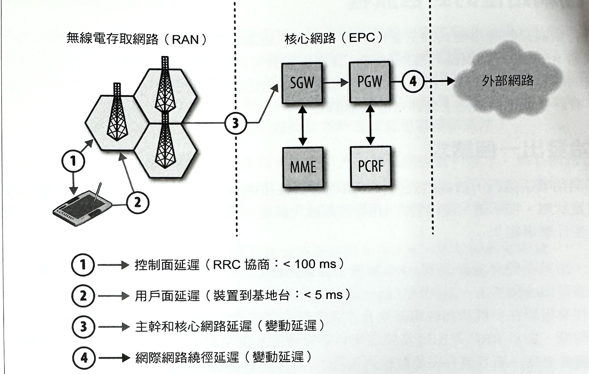實際上，許多已部署 4G 網路的端對端延遲時間，多半會在裝置處於已連線狀態下，傾向在 30 到 100 毫秒範圍以內——那表示，不會有最初封包所引發的控制面延遲。因此，要是總時間高達 5 毫秒 的部分被算在第一無線電節點上的話，那剩餘的部分（25 到 95 毫秒）則是屬於載波核心網路裡的繞徑和傳輸成本。
接下來，假設瀏覽器已取得所請求的頁面，而使用者也正在瀏覽其內容的話，無線電就會被閒置個十幾秒——這表示 RRC 很可能已經把使用者遷移到 DRX 狀態，以便節省電力的消耗情況，並且會把網路資源釋放給其他使用者。此時，使用者會決定要以瀏覽器來前往另一個目的地，因而觸發了一個新的請求。那麼，現在會發生什麼情況呢？
事實上，幾乎就是在重複剛剛所看過的流程——不過，由於裝置是處於休眠（DRX）狀態，因此在裝置和無線電基地台之間的協商作業（如圖-12 的步驟 1）就會稍微快一點——從休眠到已連結狀態，最高大約需要 50 毫秒（請參考表-9）。
總之，使用者開啟一個新的請求會引發幾種不同的延遲：
-
控制面延遲（Control-plane latency）
RRC 協商作業和狀態轉換程序會產生固定的一次性延遲成本：從延遲轉換至有效狀態，大概會在 100 毫秒以內，而從休眠轉換到有效狀態，則會在 50 毫秒以內。
-
用戶面延遲（User-plane latency）
每個應用程式封包在裝置和無線電基地台之間的固定成本：5 毫秒以內。
-
核心網路延遲（Core network latency）
封包從無線電基地台傳輸至封包閘道的載波相關成本：實際上約為 30 到 100 毫秒之間。
-
網際網路繞徑延遲（Internet routing latency）
載波的封包閘道與位於公開的網際網路上的目的位址之間的變動傳輸成本。
前兩項延遲受制於 4G 的基本需求、核心網路延遲則是載波專屬，而最後一個部分，則是你可以透過策略性地將伺服器移動得更接近使用者所在位置的方式，來影響其結果。
行動網路裡的延遲和抖動情況
行動網路最常見被抱怨的問題之一，就是封包延遲的變化性（variability）或抖動狀況（jitter）。事實上，整個過程裡頭有許多部分，確實都很可能會影響到延遲。然而，一旦你把重點放在第一個封包所造成的 RRC 狀態轉換的控制面成本上，你很可能就會發現到，事實上，效能會比你原本期待的情況更具可預測性。
在 LTE 當中，控制面成本會高達 100 毫秒。而在 LTE-Advanced 裡頭，這個數值會進一步地降低到 50 毫秒。然而，在早期世代的網路裡，相同的協商作業可能得花上好幾秒鐘的時間！
「核心網路繞徑延遲」（core network routing latency）是行動網路裡頭，對整體封包延遲來說，第二個，而且往往都還蠻大的影響因子。在核心網路裡所引發的特定延遲，會隨著網路世代和電信業者所部署的特定基礎建設的不同，而會有所差異。然而，當少數電信商大肆宣稱他們的延遲效能的時候，很可能是因為他們沒有什麼好引以為傲的優勢——這類資訊通常可以在他們的技術問答集裡頭找到。
例如，北美最大的行動網路供應商 AT&T 公司，就普遍地對營運業者，針對它的網路裡的各個世代的核心網路延遲，設定了以下這些期望值：
表-10 ： AT&T 針對部署 2G 到 4G 網路所期望的延遲時間
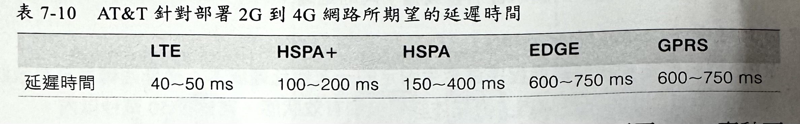相較之下，地球在赤道的圓周長度是 24,901 英里，而光速大概需要 133.7 毫秒可繞完一週。換句話說，在合理狀況下，大多數行動網路的請求，平均至少都可以繞地球一圈了！
入內資料流
現在，讓我們來審視一下相反的情況：使用者的裝置處於閒置狀態，而一個資料封包必須從 PGW 被繞徑到使用者端（如圖-13）。再一次地，回想起所有的連線其實都會被終止在 PGW 當中——也就是說，裝置可能會在無線電已關閉的情況下，處於閒置狀態，然而就像長時間連線的 TCP 議程那樣，先前就已經由裝置所建立好的連線，在 PGW 裡頭可能仍然處於有效狀態。
圖-13 ：LTE 入內資料流的延遲狀況
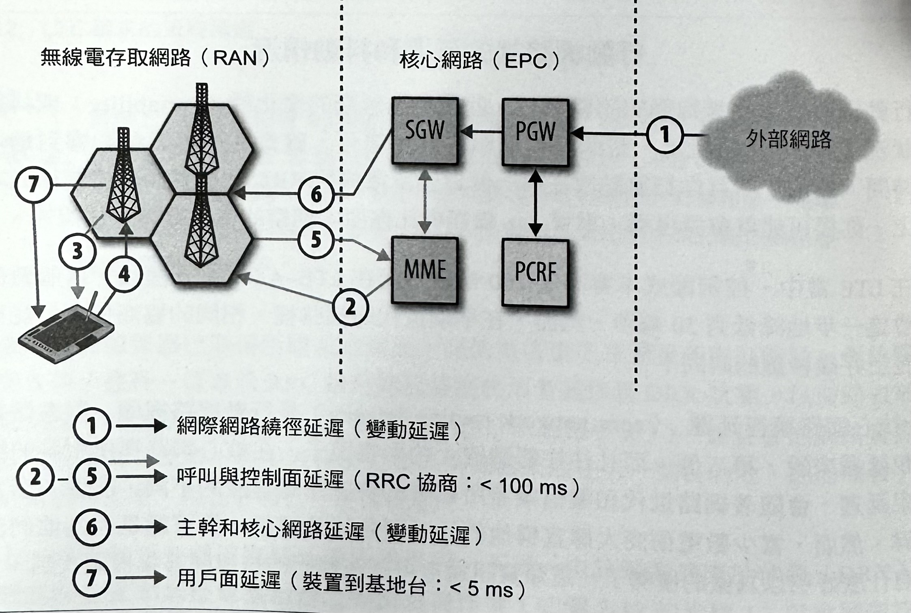就像我們之前所說的，PGW 曾把入內封包（inbound packet）繞徑到 SGW（步驟1），並且對 MME 進行查詢作業。然而，MME 可能不知道目前對使用者提供服務的確切基地台；別忘了，許多的無線電基地台會聚集成一個「追蹤區域」。每當有使用者進入不同的追蹤區域時，它的位置會在 MME 裡頭被進行更新，但是在相同追蹤區域裡頭的基地台移交情況，並不會對 MME 觸發更新作業。
換句話說，要是裝置是處於閒置狀態的話，MME 就會把一個呼叫訊息（paging message）發送給追蹤區域裡的所有基地台（步驟2），進而讓大家在共用無線電頻道上廣播一個通知訊息（步驟3），來指示裝置應該要重新建立起它的無線電脈絡，以便接收入內資料。裝置會週期性地醒來，以偵聽這類呼叫訊息，而且要是它發現到自己就在呼叫清單裡頭的話，就會啟用與無線電基地台之間的協商作業（步驟4），以便重新建立起無線電脈絡環境。
一旦無線電脈絡被建立起來，執行協商作業的基地台就會把一個訊息傳回給 MME（步驟5），以指出使用者的所在位置。接著，MME 會把結果傳回給服務閘道，閘道再把訊息繞徑給基地台（步驟6）。最後，基地台才會把訊息傳送給裝置（步驟7）。搞定！
當裝置處於已連線狀態時，無線電基地台和服務閘道之間就會有一個直接通道被建立起來——這表示後續的入內封包都會跳過步驟2~5，而在不會有任何呼叫成本的情況下，被直接繞徑到基地台。再一次地，只有第一個封包會在行動網路上，帶來較多的延遲。
上述的封包傳送流程，對於 IP 層以及在它之上的所有層級（包括我們的應用程式）來說，都是透明的：封包在可以被繞徑至裝置之前的每個階段裡，都會被 PGW、SGW 和 eNodeB 進行緩衝處理。實際上，這會與第一個封包在控制面協商作業上所帶來的最高延遲，轉變成在封包到達時間裡的可觀察延遲抖動現象（latency jitter）。
異質網路（Heterogeneous Networks, HetNets）
現有的 4G 無線電和調變技術，都已經到達無線頻道的理論極限了。因此，在無線效能裡的下一個級別，就不會是在無線電介面上進行改進，而是會從更靈活的無線網路的拓璞方式上著手——尤其是，要透過廣泛部署的多層異質網路部分（heterogeneous networks，HetNets），而這些也將需要在內部區域協調、移交，以及干擾管理方面有許多的改進才行。
隱藏在 HetNets 背後的主要概念很簡單：針對會讓所有使用者產生許多競爭情況的龐大區域的廣泛涵蓋範圍部分，我們也可以搭配許多小區域範圍（cells）的方式來涵蓋原本的區域（如圖-14），而其中的每個小區域將可以讓路徑遺失狀況最少、需要較低的傳輸功率，並讓所有使用者發揮最佳效能。
圖-14 ：異質網路資訊圖解（以 Ericsson 公司為例）
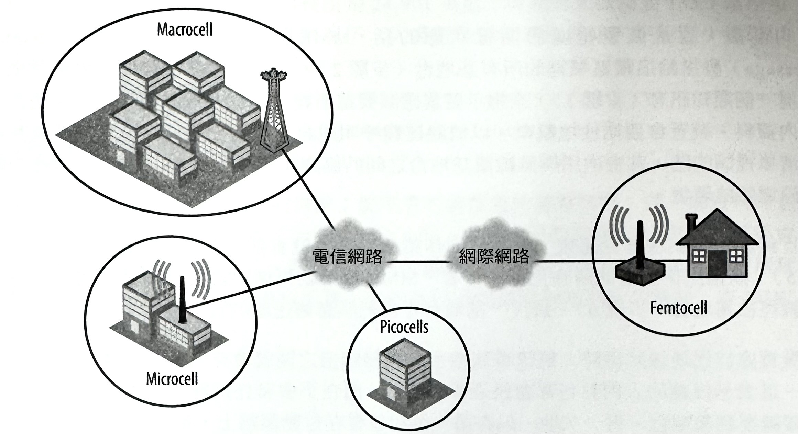
單一「大區域範圍」（macrocell）能夠涵蓋高達數十平方英里的低密度無線環境，但實際上，在高密度市區和辦公室環境當中，可能會被限制在50到300公尺的範圍內！換句話說，它可以涵蓋到一個較小的區域，或者是幾棟建築範圍。相較之下，「小區域範圍」（microcells）是被設計要涵蓋特定建築範圍；「微型區域範圍」（picocells）則可以服務到一個或多個不同的樓層，而「毫微區域範圍」（femtocells）可涵蓋到一間小公寓，並充分力用你現有的寬頻服務來當作無線回程網路使用。
然而，請注意到，HetNets並不單純只是用許多小型區域，來取代掉原本的「大區域範圍」而已。相反地，HetNets 則是在彼此的上面相互交疊了許多的區域範圍！透過把無線網路的涵蓋範圍相互重疊的部署方式，HetNets 就可以對所有使用者，提供更好的網路容量，以及改良過的涵蓋範圍。但是，這當中最主要的挑戰，是要把各種網路層級之間的干授減到最小、提供足夠的上行傳輸容量，並且建立和改良無縫移交機制的協定。
這對建立行動應用程式的開發者來說，意味著什麼呢？這表示你可以預期到，在不同區域之間的移交次數和相對應的修改情況會大幅增加——也就是說，延遲和吞吐量效能可能會有很明顯的變化。
無線網路容量的規範與管理作業
「微型區域」通常會被行動電信業者，用來把涵蓋範圍擴展到訊號品質較差的室內和戶外區域，或者是用來增加在極密集的電話使用情況的區域裡的網路容量——像是大型公開區域、會議廳、體育館，和火車站等等。有些「微型區域」可能會被永久地部署著，但其他的有可能只是為了某個特定目的而被暫時部署——無線容量的規劃與規範工作（如圖-15）既是一門藝術也是一門學問！
圖-15 ：以 TamoGraph 軟體來進行無線容量的規劃作業
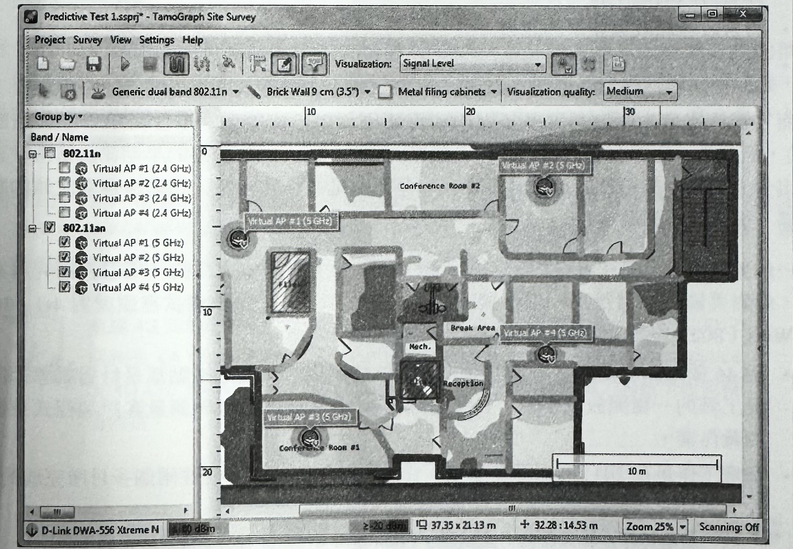
像上面所呈現的 Tamo Graph Site Survey 之類的專屬規劃軟體，通常都會被拿來進行實體環境、有效使用者的數量，以及採用的無線技術（在上述範例中採用 WiFi）的規劃工作，以便推斷出網路的必要數量、配置和設定方式。
真實世界的 3G、4G 和無線網路效能
此時，有人會懷疑，在 3G 或 4G 網路裡的所有額外協定、閘道，和協商機制，是否真的值得增加那額外的複雜性。相較之下，WiFi 實作方式就顯得簡單許多，而且似乎運作得都很不錯了，不是嗎？要回答這個問題，其實是需要有很多前提的，因為就像我們看過的那樣，無線效能的測量工作，還得牽涉到許多環境和技術上的考量因素。
而且，這問題的回答也會隨所選擇的評量標準而有所不同：
- 電池效能與網路效能的重要性。
- 每個使用者和網路範圍內的吞吐量效能。
- 延遲和封包抖動效能狀況。
- 部署方式的成本和可行性。
- 符合政府和政策要求的能力。
- 其他與各種類似的規則標準。
然而，雖然這當中存在著許多不同的利害關係（包括使用者、電信商和手機製造商之間），而且每一個都有它們自己的優先順序，但是，新的 4G 網路的早期測試情況，正展現出令人感到大有可為的結果。事實上，像網路延遲、吞吐量，和網路容量之類的關鍵指標，往往都能勝過 WiFi 了！
舉一個更具體的例子：在美國密西根大學和 AT&T 實驗室之間的一項聯合研究專案當中，就對美國境內進行過一項全國測試（如圖-16），而這項測試裡頭就對 4G、3G，和 WiFi（802.11g, 2.4GHz）性能做了一番比較：
- 對 46 個不同的測量實驗室節點，做過效能測量，而這類節點都是針對網際網路測量工具的一種開放式平台，並且是經由 MobiPerf 開放源碼測量客戶端程式來進行測量作業。
- 測量工作是在 2011 年下半年當中，由 3,300 位使用者，歷經兩個多月所完成的。
針對每個連線類型的「盒鬚圖」（box-and-whisker plot）會把許多有用的資訊繪製成一種簡易的圖表：其中的鬍鬚部分呈現出整個分佈範圍，而方盒部分則表示分佈情況中的 25%~75% 的四分位數（quantiles），而方盒裡頭的黑色水平線則是分佈的「中位數」（median）。
圖-16 ：WiFi、LTE、3G 效能的測試結果分析
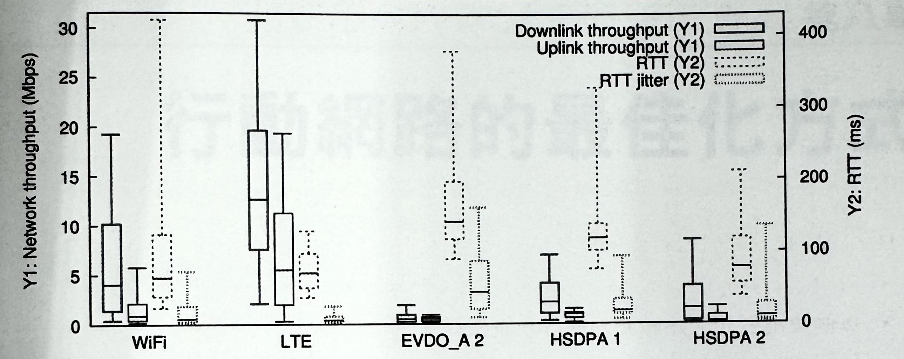當然，單一次的測試並不能就此證明一項通用規則——尤其是在涉及到總體效能的情況下，但這結果仍然是相當令人激賞的：早期的 LTE 網路正展現出優異的網路吞吐量，甚至是在與其他網路標準相較之下，極為穩定的 RTT 和封包抖動延遲部分，實在是令人感到印象深刻。
換句話說，至少在這次的測試當中可以看出，LTE 能夠提供與 WiFi 相比擬的最佳效能，而所有額外複雜性的問題也就因此一筆勾消了！行動網站不一定就比較慢。事實上，我們完全有理由相信，我們可以，並且也將會讓它變得更快。
有關 4G 效能的研究、分析，和結論的全部細節，請參閱 MobiSys 在 2012 年發表的《A Close Examination of Performance and Power Characteristics of 4G LTE Networks》（深入檢驗 4G LTE 網路的效能和電力特性）研究報告內容。